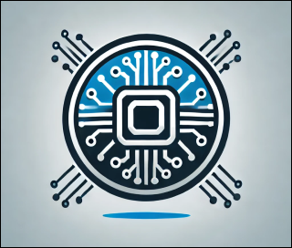
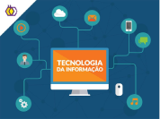
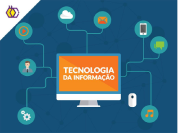

Seja bem-vindo(a) à plataforma de cursos AprendaJá!
Olá, Fulano!
Curso
Dicas
Novidades
A Tecnologia da Informação (TI) é um dos pilares fundamentais da era
digital, desempenhando um papel estratégico na inovação, automação e
otimização de processos em empresas e na sociedade.
Saiba mais


Bem-vindo(a) ao aplicativo de cursos da área de Técnologia da informação, na
qual irá aprender sobre as tecnologias emergentes do mercado de trabalho.
Aqui você irá encontrar cursos sobre programação, redes, design, projetos,
engenharia de software, inteligência artificial e muito mais.
Explore os links e navegue conosco nesta jornada de aprendizado.
 

O que é a tecnologia da informação?

O que é a Linguagem Portugol? Guia Definitivo

Portugol é uma linguagem de programação didática que utiliza uma sintaxe
baseada na língua portuguesa.
Seu principal objetivo é ensinar lógica de programação para iniciantes.
Roadmap Para Aprender Programação: O Caminho Certo Para se Tornar um
Programador
Um roadmap define quais habilidades e tecnologias devem ser aprendidas
primeiro, organizando o conhecimento.
Saiba mais
Dev.site@gmail.com
(17) 99456-7890